Version: 2.0
Created: 21 November 2016
Store page: http://themeforest.net/item/live-blog-template/15761936/
Demo: http://themes.kubasto.com/template/live/
Live is a responsive template, which means it adapts to the device on which it's presented. It also has an option to livestream content.
Live has a lot of features, and most of them can be explored by looking at it's code, but if you need a deeper insight, this is the detailed documentation prepared for you.
Thanks for buying, and enjoy :)
| Folder/file name | Description |
|---|---|
CACHE |
Folder with cache files. |
COMPONENTS |
Folder with third-party scripts and extensions. |
CONTENT |
Folder with example content. |
CSS |
Folder with SASS files and compiled CSS files. |
JS |
Folder with JavaScript. |
PHP |
Folder with PHP files. |
RES |
Folder with graphic elements and other resources. |
*.html |
All files with the template pages. |
base64.rb |
Custom Sass function for base64 encoding. |
config.rb |
Ruby/Sass configuration file. |
Live is responsive and fluid template with several key thresholds which change page behaviour:
Maximum site width can be set to one of the following thresholds:
To set maximum site width add selected class to body element:
<body class="site-width-xlarge">
CSS styles of Live are created with the Sass preprocessor. It means these style files need to be compiled to plain CSS so a web browser could read them. You could work directly on complied CSS files, but it's less convenient and lacks the features which Sass brings. So after editing Sass styles, you need to perform the compilation process.
If you're not familiar with Sass, you'll need perform these steps:
sass --require .\config.rb --load-path components --watch css:css
This command should be executed from the main folder of the template (if not, paths need to be adjusted).
It might seem complicated if this is the first time you deal with Sass, however this is becoming a standard in CSS writing, so it's good to know it. If you prefer a simpler way (but not perfect), you could use tool like Koala which has easy graphic interface.
To configure the template adjust a few values in style and JavaScript files which affect whole template.
Files like css/style-strong.scss are template schemes. They include set of variables which affect colors and fonts. If you want to edit a scheme, copy one of them, rename to your liking and edit the variables you want to customize.
At the end of each .html file there is a code creating Live object:
<script>
new Live;
</script>
which is a main JavaScript application controlling most template functions.
This constructor can have the following parameters:
| Parameter | Default value | Description |
|---|---|---|
simpleIconsPath |
components/simple-icons |
Path to folder containing svg files with social media icons. |
simpleLightboxOptions |
array | Default settings for the Simple Lighbox component. |
Example code with non-default parameters:
<script>
new Live({
simpleIconsPath: 'data/icons',
simpleLightboxOptions: {
widthRatio: 0.8,
heightRatio: 0.85
}
});
</script>
Page background can be configured in 2 ways:
Dots pattern, by adding the background-dots class to <body>:
<body class="background-dots">
Parallax effect, by adding new layer with the background-parallax class just below <body>:
<body>
<div class="background-parallax"></div>
...
Remember to configure background image of this newly added layer, which will scroll with the parallax effect:
body > .background-parallax {
background-image: url( ... );
}
You can see a real-use example of parallax background in the corporation-index.html file.
#header layer can include logo, menu, search and social media icons. Header can be arranged in many ways with the following parameters:
Ratio forces header to keep proportions no matter how much logo and menu take area. It's useful if you want background image to be visible in the header area. To set the header proportions, add ratio-x-y class to the #header layer (where x/y is width to height ratio), for example:
<header id="header" class="ratio-2-1"> ... </header>
The value can be from ratio-1-5 to ratio-4-0.
Logo / menu alignment. You can set horizontal and vertical layout of logo and menu by adding one of the following classes to the .main layer. For vertical alignment:
vertical-align-top,vertical-align-middle,vertical-align-bottom,vertical-align-stack,For example:
<div class="main vertical-align-middle"> ... </div>
And for horizontal alignment:
horizontal-align-left,horizontal-align-center,horizontal-align-right,For example:
<div class="main vertical-align-middle horizontal-align-center"> ... </div>
These classes can generate 12 header layouts:
| .horizontal-align-left | .horizontal-align-center | .horizontal-align-right | |
|---|---|---|---|
| .vertical-align-top | 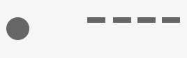 | |
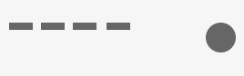 |
| .vertical-align-middle | 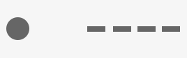 | 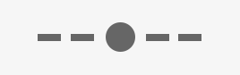 | 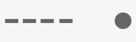 |
| .vertical-align-bottom | 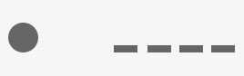 | 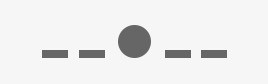 | 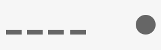 |
| .vertical-align-stack | 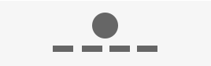 | 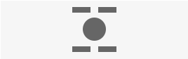 | 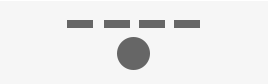 |
The horizontal-align-center class splits menu into 2 equal in quantity parts.
To place a gallery use the following HTML code:
<div class="gallery" data-gallery-columns="4">
<a href="..."><img src="image1.jpg" /></a>
<a href="..."><img src="image2.jpg" /></a>
<a href="..."><img src="image3.jpg" /></a>
...
</div>
Gallery can have the following parameters:
| Parameter | Default value | Description |
|---|---|---|
data-gallery-columns |
4 |
Number of columns. |
data-gallery-min-width |
600 / data-gallery-columns |
Minimum width of a column. |
It's a special tag in post meta section, which counts down time to a specified date. To place countdown tag, use the following HTML code:
<li class="tag-countdown" data-countdown-date="2016 06 22 16:00:00 GMT+0100"><span>Livestream</span></li>
where the data-countdown-date parameter is the target date. Label in the <span> element is displayed before JavaScript is initialized (while the page is loading).
Broadcast element allows to display content live (with no need to refresh page). As this is just a template, only frontend of the system is included. You need also a method to deliver content to it. The php/broadcast.php file is just a kind of placeholder for the demo purposes, not a real-life solution, because it depends on what system you use for your site.
To place broadcast element on a page use the following HTML code:
<div class="broadcast" data-broadcast-url="php/broadcast.php" data-broadcast-interval="30"></div>
Possible parameters:
| Parameter | Default value | Description |
|---|---|---|
data-broadcast-url |
URL of the script handling AJAX requests for the broadcast (more about it below). | |
data-broadcast-interval |
30 |
Time between requests to server to get new entries. |
data-broadcast-limit |
100 |
Maximum number of entries visible at once (to avoid browser overloading in a long livestream). |
data-broadcast-id |
0 |
ID of the recent entry. |
data-broadcast-data |
{} |
Additional data for script. |
In each AJAX request (POST) to the script specified in data-broadcast-url parameter, the following parameters are send. The parameters allow the script to determine which next entries send. The parameters are:
| Parameter | Description |
|---|---|
id |
ID of the recent displayed entry on user's screen. If it's for example 5, then entries 6, 7, 8... up to the newest one should be sent. At the beginning of livestream, the value is 0, so entries 1, 2, 3... are sent. |
interval |
Value of the data-broadcast-interval parameter. |
limit |
Value of the data-broadcast-limit parameter. |
| ... | Other key/value pairs from the data-broadcast-data parameter. |
The most important parameter is id, because it determines which entry should be sent next to guarantee coherence to user. Entries from the script should be in JSON format and have the following structure:
{
"time": 1460039890,
"entries": [
{
"id": 1,
"timestamp": 1460039660,
"content": "..."
},
{
"id": 2,
"timestamp": 1460039829,
"content": "..."
}
...
]
}
time is current server time in unix timestamp format. It's used to overcome variances between server time and client time.
entries is an array with objects, which are entries including the following fields:
| Field | Description |
|---|---|
id |
ID of the entry. |
timestamp |
Timestamp in unix timestamp format. |
content |
Content of the entry (may include HTML code). |
To place a Twitter feed, use the following HTML code:
<div class="twitter" data-twitter-url="php/twitter.php" data-twitter-username="KUBASTOcom" data-twitter-count="3"></div>
Possible parameters:
| Parameter | Default value | Description |
|---|---|---|
data-twitter-url |
URL of the script handling Twitter feed. | |
data-twitter-username |
Twitter username. | |
data-twitter-include-retweets |
true |
Including retweets. |
data-twitter-exclude-replies |
false |
Excluding replies. |
data-twitter-count |
5 |
Number of tweets to get. |
data-twitter-data |
{} |
Additional data for script. |
Remember to configure Twitter API settings in the php/twitter.php file. Because of Twitter API 1.1 new rules, you need to create a Twitter app for the Twitter widget to work correctly. You can read how to do that in this tutorial.
It allows to load more posts with an AJAX request. As this is just a template, only frontend of the system is included. You need also a method to deliver content/posts to it. The php/post_loader.php file is just a kind of placeholder for the demo purposes, not a real-life solution, because it depends on what system you use for your site.
To place a post loader on a page, use the following HTML code:
<div class="post-loader" data-post-loader-url="php/post_loader.php" data-post-loader-id="142">
<div class="box">
<div class="box-content">
<div class="small-title post-loader-control"></div>
</div>
</div>
</div>
It should be placed after the last post on a page.
Possible parameters:
| Parameter | Default value | Description |
|---|---|---|
data-post-loader-url |
URL of the script handling AJAX requests for the post loader (more about it below). | |
data-post-loader-count |
10 |
Number of posts to get. |
data-post-loader-id |
0 |
ID of the last post. |
data-post-loader-data |
{} |
Additional data for script. |
In each AJAX request (POST) to the script the following parameters are send. The parameters allow the script to determine which next posts send. The parameters are:
| Parameter | Description |
|---|---|
id |
ID of the last post displayed on user's screen. If it's for example 15, then posts 14, 13, 12... up to the oldest one should be sent. |
count |
Value of the data-post-loader-count parameter. |
| ... | Other key/value pairs from the data-post-loader-data parameter. |
The most important parameter is id, because it determines which entry should be sent next to guarantee coherence to user. Posts from the script should be in JSON format and have the following structure:
{
"posts": [
{
"id": 15,
"content": "..."
},
{
"id": 14,
"content": "..."
}
...
]
}
posts is an array with posts, which include the following fields:
| Field | Description |
|---|---|
id |
ID of the post. |
content |
HTML code of the post. |
To hide / show some content on different screen widths, use one of the predefined CSS classes in the following format:
.media-{breakpoint}-{display}
where breakpoint is one of the following thresholds:
xsmall (0px),small (480px),medium (768px),regular (960px),large (1120px),xlarge (1440px),xxlarge (1600px),and display is one of the following display methods (the same as in CSS's display attribute):
none,inline,inline-block,block.Template is written in a mobile-first convention, so when you use a class, it refers to the specified threshold and all bigger sizes.
For example, if you want an element to be visible on desktops only, use the following classes:
<div class="media-xsmall-none media-regular-block"> ... </div>
And the other way - visible on mobiles only:
<div class="media-regular-none"> ... </div>
or any other combination of these classes to achieve more sophisticated combinations.
All those elements need PHP to work. So if you watch the site as a static HTML document, they will not work. You need a www server with PHP 5.4+ for them to work.
Additionally, Twitter require you to create an app on dev.twitter.com so you get API keys to use in the php/twitter.php file.
Also contact form might need configuration changes in the php/contact_form.php file to work correctly on your server.
To update the template to newer version, replace components, css, js, php and res folders of your site. If you've modified any template files in these folders, remember to take care of your changes.
1. Replace all occurrences of the columns class to flex-columns:
Before:
<div class="columns"> ... </div>
After:
<div class="flex-columns"> ... </div>
2. Add fonts stylesheet to the <head> section. Fonts' styles are now in separate stylesheet.
Before:
<link rel="stylesheet" href="css/style-serious.min.css" />
After:
<link rel="stylesheet" href="css/style-serious.min.css" />
<link rel="stylesheet" href="css/typo-merriweather-open-sans.min.css" />
1. Add the sidebar-right class to each .holder layer which have right (default) sidebar:
Before:
<div class="holder"> ... </div>
After:
<div class="holder sidebar-right"> ... </div>
Bourbon
imagesLoaded
jQuery
OAuth
Resize Sensor
Simple Icons
Simple Lightbox
SpinKit
Stickyfill
Demo images comes from:
StockSnap.io
Unsplash
PixaBay
Jay Mantri
Live 2.0 (21 Nov 2016)
Live 1.6 (31 Jul 2016)
Live 1.5 (28 Jun 2016)
Live 1.4 (9 Jun 2016)
Live 1.3 (30 May 2016)
Live 1.2 (19 May 2016)
Live 1.1 (8 May 2016)
Live 1.0.1 (29 Apr 2016)
Live 1.0 (19 Apr 2016)
for purchasing this template. If you have any further questions don’t hesitate to ask. The best way to contact me is the contact form on my profile page.
Kuba Sto